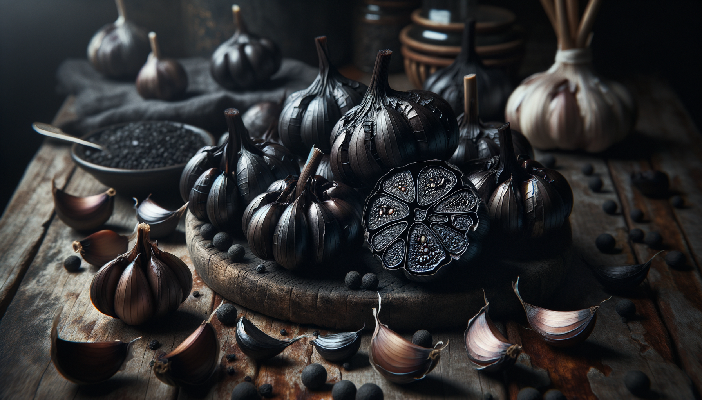
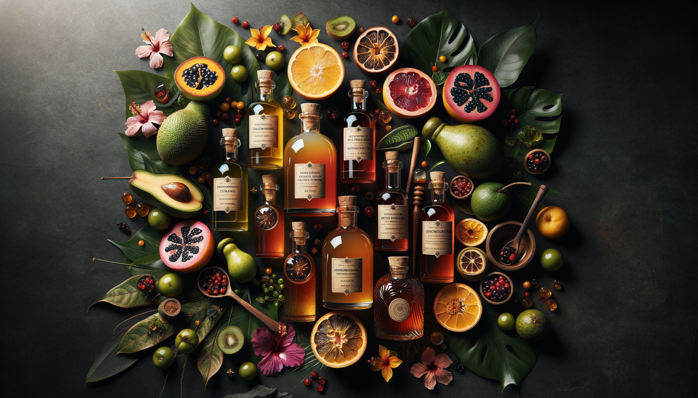

Maia Botánicas fabrica jarabes clarificados artesanales, fermentos de precisión y extractos botánicos usando ingredientes colombianos — el hibiscus, el lulo, el corozo, la pasiflora — y los envía al mundo. Incluso de vuelta a España.
Maia Botánicas manufactures artisanal clarified syrups, precision ferments and botanical extracts using Colombian ingredients — hibiscus, lulo, corozo, passionfruit — and ships them to the world. Even back to Spain.

Hibiscus, lulo, guanábana, corozo, maracuyá y más
Hibiscus, lulo, soursop, corozo, passion fruit and more
Formulados para bares, hoteles y programas premium
Formulated for bars, hotels and premium programmes
Decoraciones de barra de origen tropical colombiano
Tropical-origin bar decorations from Colombia
Sazonador tropical de chile y limón, propiedad nuestra
Tropical chili-lime seasoning, proprietary recipe

Los mejores bares de Colombia usan jarabes clarificados importados de España o Europa. ¿Por qué? Porque nadie los fabricaba aquí con calidad B2B. Maia Botánicas resuelve eso — producción local con manufactura contratada, botánicos colombianos auténticos, y la misma consistencia técnica que exige cualquier programa de coctelería de autor.
Colombia's best bars use clarified syrups imported from Spain or Europe. Why? Because no one was manufacturing them locally to B2B standard. Maia Botánicas solves that — local production using contract manufacturing, authentic Colombian botanicals, and the same technical consistency demanded by any serious cocktail programme.
Desde concentrados técnicos para producción a escala hasta sazonadores artesanales con identidad colombiana — todo fabricado localmente con ingredientes de origen verificable.
From technical concentrates for scale production to artisanal seasonings with Colombian identity — all manufactured locally with verifiable-origin ingredients.
65° Brix, cristal claro, compatibles con carbonatación y dispensación en barril. Hibiscus (anthocyanins 1.5-2.2%), lulo (62° Brix, pH 3.2), maracuyá, guanábana y más. Shelf-stable, export-ready.
65° Brix, crystal-clear, compatible with carbonation and keg dispensing. Hibiscus (anthocyanins 1.5-2.2%), lulo (62° Brix, pH 3.2), passion fruit, soursop and more. Shelf-stable, export-ready.
Jarabes de coctelería para bares, restaurantes y hoteles. Formulados para consistencia batch a batch, sin artificiales. Hibiscus, tamarindo, corozo, ají tropical y mezclas de especias de la Sierra Nevada.
Cocktail syrups for bars, restaurants and hotels. Formulated for batch-to-batch consistency, no artificials. Hibiscus, tamarind, corozo, tropical chili and Sierra Nevada spice blends.
Decoraciones de barra premium de frutas y flores tropicales colombianas deshidratadas. Flores de hibiscus, lulo deshidratado, corozo y frutas Caribe. Presentación boutique para coctelería de autor.
Premium bar decorations from dehydrated Colombian tropical fruits and flowers. Hibiscus flowers, dried lulo, corozo and Caribbean fruits. Boutique presentation for craft cocktail service.
Sazonador tropical de chile y limón — el Tajín colombiano. Receta propia, identidad única de búsqueda, ideal para coctelería, snacks y gastronomía tropical. Packaging boutique, marca registrada.
Tropical chili-lime seasoning — the Colombian Tajín. Proprietary recipe, unique search identity, ideal for cocktails, snacks and tropical gastronomy. Boutique packaging, trademark brand.
Nuestros jarabes clarificados artesanales están diseñados para cocinas y barras profesionales que exigen consistencia, sabor auténtico y origen verificable. Somos el proveedor de referencia de El Sanatorio y operamos en el ecosistema LlevaLleva para entrega B2B en Colombia.
Our artisanal clarified syrups are designed for professional bars and kitchens that demand consistency, authentic flavour and verifiable origin. We are the reference supplier for El Sanatorio and operate in the LlevaLleva ecosystem for B2B delivery in Colombia.
Manufactura local contratada, sin intermediarios de importación. Entregas más rápidas, precios más competitivos que los importados de España o Europa, y una historia de origen que cuenta tu menú.
Local contract manufacturing, no import intermediaries. Faster delivery, more competitive pricing than imports from Spain or Europe, and an origin story your menu can tell.
Cada lote documentado con COA (Certificate of Analysis). Brix garantizado, pH controlado, sin variaciones sensoriales. Lo que funciona en tu primera muestra es lo que recibes en el pedido 50.
Every batch documented with COA (Certificate of Analysis). Guaranteed Brix, controlled pH, no sensory variation. What works in your first sample is what you receive on order 50.
Nuestra línea está en la plataforma B2B LlevaLleva — el marketplace para chefs y restaurantes en Colombia. Catálogo actualizado, pedidos recurrentes, entrega directa, suscripción HORECA mensual disponible.
Our range is on the LlevaLleva B2B platform — the marketplace for chefs and restaurants in Colombia. Updated catalogue, recurring orders, direct delivery, monthly HORECA subscription available.
Ofrecemos muestras a barras y cocinas profesionales. WhatsApp directo o formulario — respondemos en menos de 24 horas. El programa Sushi Pop usa nuestra línea de fermentos asiáticos colombianos.
We offer samples to qualified professional bars and kitchens. Direct WhatsApp or form — we respond within 24 hours. The Sushi Pop programme uses our Colombian Asian ferments range.
Nuestros productos están diseñados para exportación desde el origen: documentación completa, cumplimiento de estándares internacionales y acceso a mercados vía CEPA Colombia-UAE (libre de aranceles), el mercado RTD de USA y los programas HORECA de Europa.
Our products are designed for export from the start: full documentation, international standards compliance and market access via the Colombia-UAE CEPA (tariff-free), the US RTD market and European HORECA programmes.
Ver condiciones de exportación → View export terms →Acceso vía Colombia-UAE CEPA. Cero aranceles sobre ingredientes alimentarios colombianos desde 2024.
Access via Colombia-UAE CEPA. Zero tariffs on Colombian food ingredients since 2024.
Mercado de syrups premium para coctelería sin alcohol en crecimiento exponencial. Ingredientes colombianos como diferenciador.
Exponentially growing premium syrups market for no/low cocktails. Colombian ingredients as differentiator.
Ingredientes colombianos de origen verificable para distribuidores gourmet, hoteles y bares de autor europeos. FOB Cartagena.
Verifiable-origin Colombian ingredients for gourmet distributors, hotels and European craft bars. FOB Cartagena.
Muestras B2B, cotizaciones de exportación o simplemente una conversación — respondemos en menos de 24 horas.
B2B samples, export quotes or just a conversation — we respond within 24 hours.